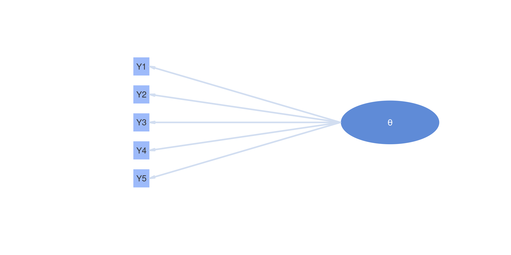
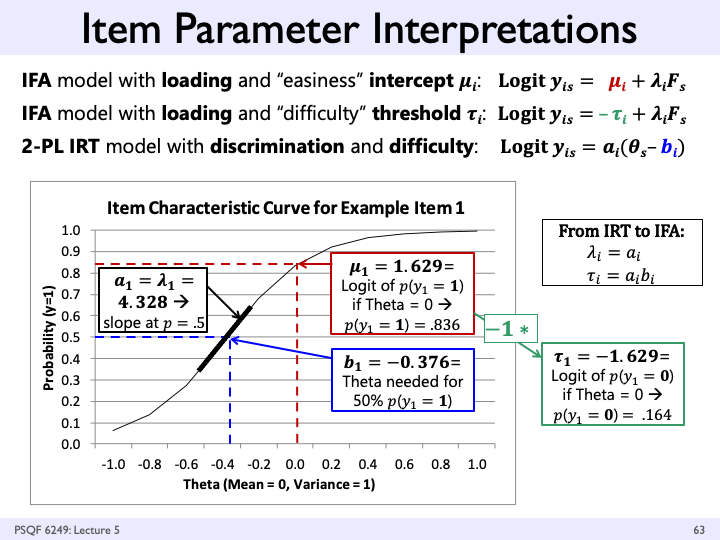

Introduction to Measurement Models
SMIP Summer School 2025: Lecture 02
Section Objectives
- Latent traits
- Our first graphical model (path diagram)
- Psychometric models from generalized linear models
Latent Traits: A Big-Picture View
Latent trait theory posits there are attributes of a person (typically) that are:
- Unobservable (hence the term latent)
- Quantifiable
- Related to tasks that can be observed
Often, these attributes are often called constructs, underscoring they are constructed and do not exist, such as:
- A general or specific ability (in educational contexts)
- A feature of personality, such as “extroversion” (in psychological contexts)
The same psychometric models apply regardless of the measurement context
Latent Traits are Interdisciplinary
- Many varying fields use some version of latent traits
- Similar (or identical) methods are often developed separately
- Item response theory in education
- Item factor analysis in psychology
- Many different terms for same ideas, such as the
- Label given to the latent trait: Factor/Ability/Attribute/Construct
- Label given to those giving the data: Examinee/Subject/Participant/Respondent/Patient/Student
- What this means:
- Lots of words to keep track of, but (relatively) few concepts
- We will focus on concepts (but have a lot of words)
Best Measures are Built Purposefully
- Latent constructs seldom occur randomly—they are defined
- The definition typically indicates:
- What the construct means
- What observable behaviors are likely related to the construct
- For a lot of what we do, observable behavior means answering questions on an assessment or survey
- Therefore, modern psychometric methods are built around specifying the set of observed variables to which a latent variable relates
- No need for exploratory analyses—we define our construct and seek to falsify our definition
- The term I use for “relates” is “measure”
- e.g., Educational assessment items measure some type of ability
Guiding Principles
- To better understand psychometric methods and theory, envision what analyses would be used if latent variables were not latent
- Example: Imagine if we could directly observe mathematics ability
- Then, consider what we would do with that value
- Example: We could predict how students would perform on items using logistic regression (with \(\theta\) as an observed predictor)
- Psychometric models essentially do this—use observed variable methods as if we know the value of the latent variable
- But, with:
- A data collection design allowing for such methods to be used
- A more formal vetting of whether or not we did a good job measuring the construct
Measurement of Latent Constructs
How does this process differ when we cannot observe the thing we are measuring—when the construct is latent?
- We still need something we can observe—item responses for example
- We need a method to map the response to a number (Strongly agree==5?)
- We also need a way to aggregate all responses to a value that represents a person
- A score or classification
- We then need a way to ensure what we just did means what we think it does
- We also need to remember that the values we estimate for a person’s latent trait(s) won’t be perfectly reliable
- Caution needed for secondary analyses
Measurement Models
- A distinguishing feature of psychometric models is the second word—they are models
- We often call such models “measurement models”
- Measurement models are the mathematical specification that provides the link between the latent variable(s) and the observed data
- The form of such models looks different across the wide classes of measurement models (e.g., factor analysis vs. item response models) but wide generalities exist
- Measurement models need:
- Distributional assumptions about the data (with link functions)
- A linear or non-linear form that predicts data from the trait(s)
- The key: Observed data are being predicted by latent variable(s)
Measurement Models vs. Other Measurement Techniques
Measurement models are a different way of thinking about psychometrics than what most people without psychometric training do
- Most scientists enumerate item response scores (e.g., correct response == 1; strongly agree == 5)
- The latent trait score estimate is then formed by adding the response scores together
- “Add”Stuff” Up” model: Ask Lesa what “stuff” means here…(Scheiße zusammenzählen?)
- As it turns out, the naïve adding together of item scores implies a measurement model
- Called parallel items — very strict assumptions (equal variances and covariances for all observed variables)
Characteristics of Latent Variables
Latent variables can be defined to have different levels of measurement
- Interval level (as in factor analysis and item response theory) — Continuous
- No absolute zero; units of the factor are equivalent across the range of values
- Example: A person with a value of 2 is the same distance from a person with a value of 0 as is a person with a value of -2
- Ordinal level (as in diagnostic classification models)
- Can rank order people but not determine how far apart they may be
- Example: Students considered masters of a topic have more ability than students considered non-masters
- Nominal level (as in latent class or finite mixture models) — Categorical
- Groups/classes/clusters of people
Most Common: Continuous Latents
- For most of this workshop, we will treat latent variables as continuous (interval level)
- As they do not exist, continuous latent variables need a defined metric:
- What is their mean?
- What is their standard deviation?
- Defining the metric is the first step in a latent variable model
- Called scale identification
- The metric is arbitrary
- Can set differing means/variances but still have same model
- Linear transformations of parameters based on scale mean and standard deviation
Measurement Model Path Diagrams
Measurement models are often depicted in graphical format, using what is called a path diagram
- Typically, latent variables are represented as objects that are circles/ovals
- Using graph theory terms, a variable in a path diagram (latent or observed) is called a node
- Lines connecting the variables are called edges
Adding Observed Variables
Measurement model path diagrams often denote observed variables with rectangular boxes
On the next slide:
- The term “latent variable” is replaced with \(\theta\)
- The observed variables are denoted as \(Y1\) through \(Y5\)
- Imagine these represent five observed items of a scale measuring \(\theta\)
Path Diagram with Observed and Latent Variables

Path Diagrams: Not Models
Path diagrams are useful for depicting a measurement model but are not isomorphic with the mathematical models they depict
- All model parameters are often not included in the diagram
- No indication about the distribution of the variables
Translating a Path Diagram to a Model
Going back to the point from before—let’s imagine the latent variable as an observed variable
- An arrow (edge) indicates one variable predicts another
- The predictor is the variable on the side of the arrow without the point
- The outcome is the variable on the side of the point
- If we assume the items were continuous (like linear regression), the diagram indicates a regression model for each outcome
\[
\begin{array}{c}
Y_{p1} = \beta_{Y_1, 0} + \beta_{Y_1,1} \theta_p + e_{p, Y_1} \\
\end{array}
\]
Interpreting the Parameters
All five regression lines implied by the model are then: \[
\begin{array}{c}
Y_{p1} = \beta_{Y_1, 0} + \beta_{Y_1,1} \theta_p + e_{p, Y_1} \\
Y_{p1} = \beta_{Y_2, 0} + \beta_{Y_2,1} \theta_p + e_{p, Y_2} \\
Y_{p3} = \beta_{Y_3, 0} + \beta_{Y_3,1} \theta_p + e_{p, Y_3} \\
Y_{p4} = \beta_{Y_4, 0} + \beta_{Y_4,1} \theta_p + e_{p, Y_4} \\
Y_{p5} = \beta_{Y_5, 0} + \beta_{Y_5,1} \theta_p + e_{p, Y_5} \\
\end{array}
\]
Here:
- \(\beta_{Y_i, 0}\) is the intercept of the regression line predicting the score from item \(Y_i\)
- The expected resposne score for a person who has \(\theta_p=0\)
- \(\beta_{Y_i, 1}\) is the slope of the regression line predicting the score from item \(Y_i\)
- The expected change in the response score for a one-unit change in \(\theta_p\)
More Interpreting the Parameters
Also:
- \(e_{p, Y_i}\) is the residual (error), indicating the difference in the predicted score for person \(p\) to item \(i\)
- Like in regression, we additionally assume:
- \(e_{p,Y_i} \sim N\left(0, \sigma^2_{e_{Y_i}} \right)\): is normally distributed with mean zero
- \(\sigma^2_{e_{Y_i}}\) is the residual variance of item \(Y_i\), indicating the square of how far off the prediction is on average
The five regression models are estimated simultaneously:
- If \(\theta_p\) were observed, we would call this a multivariate regression
- Multivariate regression: Multiple continuous outcomes predicted by one or more predictors
More About Regression
\[Y_{pi} = \beta_{Y_i, 0} + \beta_{Y_i,1} \theta_p + e_{p, Y_i} \] In the regression model for a single variable, what distribution do we assume about the outcome?
- As error is normally distributed, the outcome takes a normal distribution \(Y_{pi} \sim N( ?, ?)\)
- As \(\beta_{Y_i, 0}\), \(\beta_{Y_i,1}\), and \(\theta_p\) are constants, they move the mean of the outcome to \(\beta_{Y_i, 0} + \beta_{Y_i,1} \theta_p\)
- \(Y_{pi} \sim N( \beta_{Y_i, 0} + \beta_{Y_i,1} \theta_p, ?)\)
- As error has a variance of \(\sigma^2_{e_{Y_i}}\), the outcome is assumed to have variance \(\sigma^2_{e_{Y_i}}\)
- \(Y_{pi} \sim N( \beta_{Y_i, 0} + \beta_{Y_i,1} \theta_p, \sigma^2_{e_{Y_i}})\)
- Therefore, we say \(Y_{pi}\) follows a conditionally normal distribution
The Univariate Normal Distribution
\(Y \sim N( \mu, \sigma^2)\) that implies a probability density function (pdf)
\[f\left(Y\right) = \frac{1}{\sqrt{2 \pi \sigma^2 }}\exp\left[\frac{\left(Y - \mu \right)^2}{2\sigma^2} \right]\]
- Here, \(\pi\) is the constant 3.14 and \(\exp\) is Euler’s constant (2.71)
- Of note here is that there are three components that go into the function:
- The data \(Y\)
- The mean \(\mu\) — this can be the conditional mean we had on the previous slide (formed by parameters)
- The variance \(\sigma^2\)
- The key to using Bayesian methods is to know the distributions for each of the variables in the model
From Regression to CFA
When \(\theta_i\) is latent, the five-variable model becomes a confirmatory factor analysis (CFA) model
- CFA: Prediction of continuous items using linear regression with one or more continuous latent variables as predictors
- The interpretations of the regression parameters are identical between linear regression and CFA
Regression and CFA Differences
The differences between CFA and regression are:
- \(\theta_p\) as a predictor is not observed in CFA but is observed in regression
- Therefore, we must set its mean and variance
- There are multiple was to do this (standardized factor, marker item, etc…)—stay tuned
- Each of the model parameters has a different name (and symbol denoting it) in CFA
- \(\beta_{Y_i, 0} = \mu_i\) is the item intercept
- \(\beta_{Y_i,1} = \lambda_i\) is the factor loading for an item
- \(\sigma^2_{e_{Y_i}} = \psi^2_i\) is the unique variance for an item
- We must have a sufficient number of observed variables to empirically identify the latent trait
Changing Notation
Our five-item CFA model with CFA-notation:
\[
\begin{array}{c}
Y_{p1} = \mu_1 + \lambda_1 \theta_p + e_{p, Y_1} \\
Y_{p2} = \mu_2 + \lambda_2 \theta_p + e_{p, Y_2} \\
Y_{p3} = \mu_3 + \lambda_3 \theta_p + e_{p, Y_3} \\
Y_{p4} = \mu_4 + \lambda_4 \theta_p + e_{p, Y_4} \\
Y_{p5} = \mu_5 + \lambda_5 \theta_p + e_{p, Y_5} \\
\end{array}
\]
Measurement Models for Different Item Types
- The CFA model assumes (1) continuous latent variables and (2) continuous item scores
- What should we do if we have binary items (e.g., yes/no, correct/incorrect)?
- If we had observed \(\theta_p\) and wanted to predict \(Y_{1p} \in \{0,1\}\) what type of analysis would we use?
- Logistic regression: \[P\left(Y_{p1} = 1\right) = \frac{\exp \left( \beta_{Y_1,0} + \beta_{Y_1,1} \theta_p\right)}{1+\exp \left( \beta_{Y_1,0} + \beta_{Y_1,1} \theta_p\right)}\]
Interpreting Model Parameters
\[Logit \left( P\left(Y_{p1} = 1\right) \right) = \beta_{Y_1,0} + \beta_{Y_1,1} \theta_p\]
Here:
- \(\beta_{Y_1,0}\) is the intercept — the expected log odds of a correct response when \(\theta_p = 0\)
- \(\beta_{Y_1,1}\) is the slope — the expected change in log odds of a correct response for a one-unit change in \(\theta_p\)
- Note: there is no error variance term
Bernoulli Distributions
- Using logistic regression for binary outcomes makes the assumption that the outcome follows a (conditional) Bernoulli distribution, or \(Y \sim B(p_Y)\)
- The parameter \(p_Y\) is the probability that Y equals one, or \(P\left(Y = 1\right)\)
- The Bernoulli pdf (sometimes called the probability mass function as the variable is discrete) is: \[f(Y) = \left(p_Y\right)^Y \left(1-p_Y \right)^{1-Y}\]
- So, there is no error variance parameter in logistic regression as there is no parameter in the distribution that represents error (it is a non-constant function of the mean)
- Error is represented by how far off a probability is from either zero or one
Logistic Regression with Latent Variable(s)
- Back to our running example, if we had binary items and wished to form a (unidimensional) latent variable model, we would have something that looked like:
\[P\left(Y_{pi} = 1 \mid \theta_p \right) = \frac{\exp \left( \mu_i + \lambda_i \theta_p\right)}{1+\exp \left( \mu_i + \lambda_i \theta_p\right)}\]
Logistic Regression with Latent Variable(s)
\[P\left(Y_{pi} = 1 \mid \theta_p \right) = \frac{\exp \left( \mu_i + \lambda_i \theta_p\right)}{1+\exp \left( \mu_i + \lambda_i \theta_p\right)}\]
- Here, the parameters retain their names from CFA:
- \(\beta_{Y_i, 0} = \mu_i\) is the item intercept
- \(\beta_{Y_i,1} = \lambda_i\) is the factor loading for an item
- We call this slope-intercept parameterization
- This parameterization is called item factor analysis(IFA)
- Sometimes the intercept \(\mu_i\) is replaced with a threshold \(\tau\) (where \(\tau = -\mu_i\))
From IFA to IRT
- IFA and IRT are equivalent models—their parameters are transformations of each other: \[
\begin{array}{c}
a_i = \lambda_i \\
b_i = -\frac{\mu_i}{\lambda_i}
\end{array}
\]
More Comparisons
Comparing IFA and IRT (Source: Lesa Hoffman)
From IFA to IRT
- This yields the discrimination difficulty parameterization that is common in unidimensional IRT models:
\[P\left(Y_{pi} = 1 \mid \theta_p \right) = \frac{\exp \left( a_i\left( \theta_p -b_i\right)\right)}{1+\exp \left(a_i\left( \theta_p -b_i\right)\right)}\]
- Here:,
- \(b_i\) is the item difficulty—the point on the \(\theta\) scale at which a person has a 50% chance of answering with a one
- \(a_i\) is the item discrimination—the slope of a line tangent to the curve at the item difficulty
- IRT models have a number of different forms of this equation (this is the two-parameter logistic 2PL model)
IRT Example: Acheivement Data
To demonstrate a couple IRT models, we will compare a 1PL and 2PL model for the example data
- Please see the script mlmmWorkshop2025_Lecture02_Introduction_To_Measurement_Models.R for details
Generalized Linear (Psychometric) Models: Summary
- A key to understanding the varying types of psychometric models is that they must map the theory (the right-hand side of the equation—\(\theta_p\)) to the type of observed data (left-hand side of the equation)
- So far we’ve seen two types of data: continuous (with a normal distribution) and binary (with a Bernoulli distribution)
- For each, the right-hand side of the item model was the same
- For the normal distribution:
- We had an error term but did not transform the right-hand side
- For the Bernoulli distribution:
- No error term and a function used to transform the right-hand side so that the conditional mean will range between zero and one